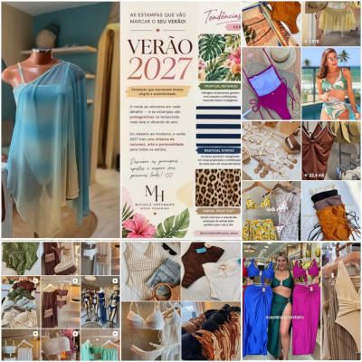

Do Clube ao Centro Urbano
Um dos movimentos mais fortes da temporada é o conceito "City to Swim": peças pensadas para transitar sem esforço entre a beira-mar e a cidade, sem que a consumidora precise trocar de roupa entre um compromisso e outro. Laise, malharia fina e recortes criativos assumem o protagonismo, trazendo uma textura mais elaborada para modelos que antes se resumiam a tecidos lisos e lycras básicas. A alfaiataria leve — antes reservada ao guarda-roupa de trabalho — passa a compor looks de praia com blazers estruturados por cima de bodies e vestidos fluidos que fazem as vezes de saída de praia, criando uma sobreposição que equilibra o formal e o descontraído. Vestidos longos com fendas estratégicas, saias-canga com amarrações escultóricas e conjuntos de crochê em ponto mais denso completam esse repertório, funcionando tanto como cobertura para a praia quanto como look completo para um almoço à beira-mar. O resultado é um armário mais enxuto e versátil, em que a mesma peça serve para o mergulho da manhã, o passeio pela orla e o jantar ao ar livre, sem perder sofisticação em nenhum dos três momentos — e sem exigir da consumidora um investimento duplicado em peças que só serviriam para uma única ocasião.
